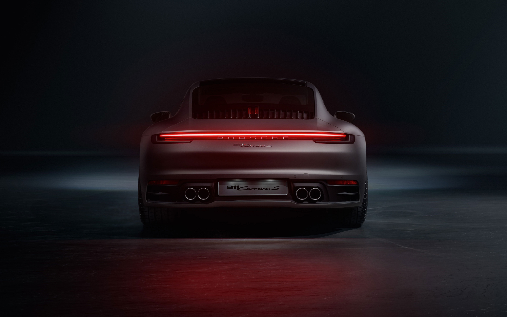

<!DOCTYPE html>
<html>
    <title>
        gridpage
    </title>
    <head>
    <link rel="stylesheet" href="contact.css">
    <link href="https://cdn.jsdelivr.net/npm/bootstrap@5.3.1/dist/css/bootstrap.min.css" rel="stylesheet" integrity="sha384-4bw+/aepP/YC94hEpVNVgiZdgIC5+VKNBQNGCHeKRQN+PtmoHDEXuppvnDJzQIu9" crossorigin="anonymous">
     </head>
</html>
<div class="container text-center">
    <div class="row">
      <div class="col">
        
        <div class="text1">
            <article>On April 25, 1931, Professor Porsche had his company officially entered in the commercial register. From that day forward, “Dr. Ing. h.c. F. Porsche GmbH, Konstruktionen und Beratung für Motoren und Fahrzeuge,” based in Stuttgart, was officially on the books. The first five projects were started in 1930 in St. Ulrich, Austria. The drawing board was in the bedroom of Porsche’s son Ferry. But the office moved to Stuttgart at the beginning of 1931, initially renting space in the city center. The idea of a neutral design office was still unheard of in the automotive world. Ferdinand Porsche did not, at the time, harbor the intention of building his own cars. His aim was to carry out technical projects for a variety of clients as well as charge licensing fees and patent royalties. The first order book illustrates in impressive fashion how the Porsche office became a hotbed of innovation for the German automotive industry.</article>
        </div>
      </div>
      <div class="col">
        
        <div class="text2">
            <article>In 1932, Porsche received the commission to develop a small car for the Zündapp motorcycle manufacturer. The car was intended to deliver a shot in the arm to the struggling manufacturer of two-wheelers. With the revival of fortunes in the motorcycle market, however, the project was put on ice. The work on the Type 12 had not been in vain, however. For the first time, the idea for the later Volkswagen (the Type 60) manifested itself. Porsche’s vision had begun to take shape, and on April 27, 1934, Erwin Komenda completed the first drawing for the Type 60, as the “Volkswagen Project” entry shows.</article>
        </div>
      </div>
    </div>